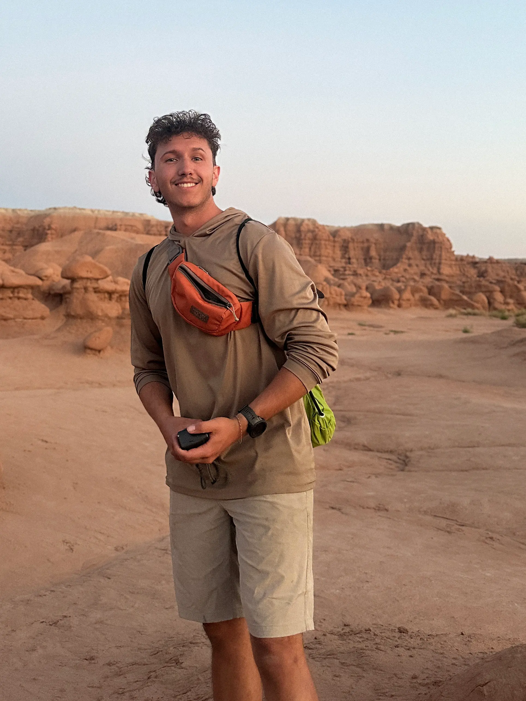

your
average...


joe smoe
Yup, that is a picture of me. Welcome to my WEB2890 Portfolio.
get to know me
work
view all
A mix of class projects, personal experiments, and things I’m exploring for fun.
Away from the computer, I spend a lot of time around bikes, cameras, and print. It sneaks into my work. I’m drawn to clear hierarchy, bold type, strong imagery, and little details that give the work a sense of texture and personality.